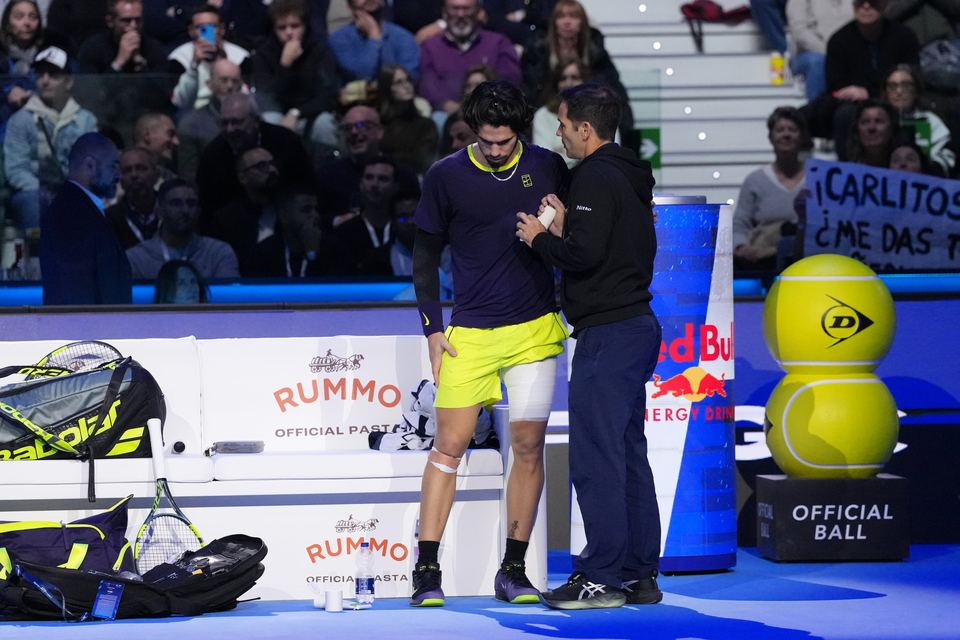

Alcaraz continúa, pero sobre el alambre: los isquios vuelven a azotarle, él asume los riesgos

El murciano jugará el viernes frente a Cobolli pese al susto contra Medvedev y tras haberse resentido de un grupo muscular que le ha originado ya varios problemas
Hay nervios, hay jaleo, hay inquietud. Es la pregunta del día, formulada una y otra vez: “ Sai qualcosa di Alcaraz? Continuerà a giocare? ”. ¿Seguirá o no seguirá? Los periodistas revolotean por los alrededores del Instituto de Medicina del Deporte de Turín, localizado en los bajos del viejo Stadio Olimpico, el viejo hogar del Torino, a la espera de saber qué ocurrirá con el tenista. La jornada previa, el murciano notó un “pequeño problema” en la zona de los músculos isquiotibiales de la pierna izquierda y tuvo que ser atendido durante el partido contra Daniil Medvedev . Pese a la alerta y el vendaje, continuó jugando sin problemas e intentará hacerlo este viernes también (14.00, Movistar+)…
Alcaraz se topará por tercera vez este año, la tercera en menos de tres meses, con el cañonero Shelton. El estadounidense, de 24 años, superó por la tarde a Rafa Jódar (7-6(8) y 7-5, en 2h 06m) y, ya de noche, la victoria de Zverev contra Fils (6-4 y 7-6(6) consolidó su segundo puesto en el grupo.
A pesar de que los precedentes reflejan un 4-1 favorable al español, el norteamericano está creciendo y pudo demostrarlo en el US Open, allá ganador, y también en la reciente final del Masters de París, en la que Alcaraz acabó imponiéndose en dos apretados sets (7-6(5) y 7-5).